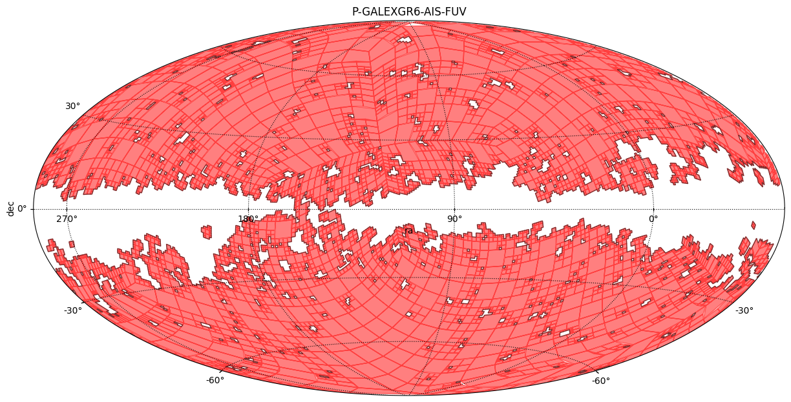
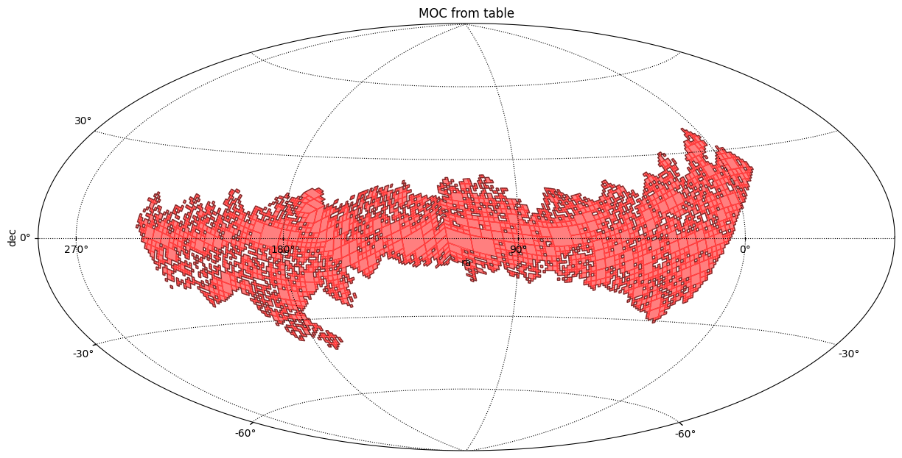
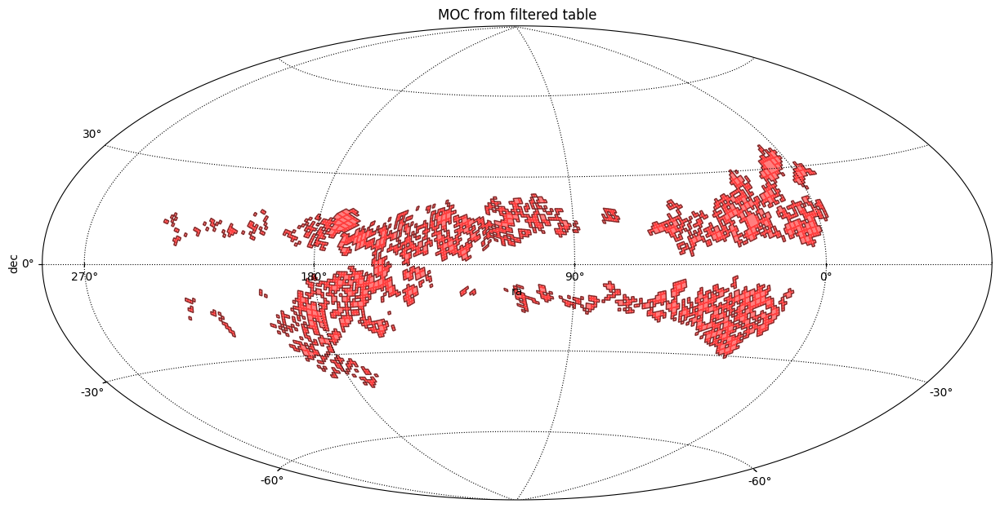

Create a MOC from a filtered astropy Table¶
[1]:
import astropy.units as u
from astropy.visualization.wcsaxes.frame import EllipticalFrame
from astroquery.vizier import Vizier
from mocpy import MOC
import matplotlib.pyplot as plt
from astropy.wcs import WCS
[2]:
viz = Vizier(columns=["*", "_RAJ2000", "_DEJ2000"])
viz.ROW_LIMIT = -1
table = viz.get_catalogs("I/293/npm2cros")[0]
[3]:
galex = MOC.from_fits("../resources/P-GALEXGR6-AIS-FUV.fits")
[4]:
def plot(moc, title=""):
"""Create a plot of a MOC."""
fig = plt.figure(figsize=(15, 10))
wcs = WCS(naxis=2)
wcs.wcs.ctype = ["GLON-AIT", "GLAT-AIT"]
wcs.wcs.crval = [110.0, 0.0]
wcs.wcs.cdelt = [-0.675, 0.675]
wcs.wcs.crpix = [240.5, 120.5]
ax = fig.add_subplot(1, 1, 1, projection=wcs, frame_class=EllipticalFrame)
moc.fill(
ax=ax,
wcs=wcs,
edgecolor="r",
facecolor="r",
linewidth=1.0,
fill=True,
alpha=0.5,
)
moc.border(ax=ax, wcs=wcs, color="black", alpha=0.5)
ax.set_aspect(1.0)
plt.xlabel("ra")
plt.ylabel("dec")
if title:
plt.title(title)
plt.grid(color="black", linestyle="dotted")
[9]:
plot(moc=galex, title="P-GALEXGR6-AIS-FUV")

[6]:
table
[7]:
indexes = galex.contains_lonlat(
table["_RAJ2000"].T * u.deg,
table["_DEJ2000"].T * u.deg,
)
filtered_table = table[indexes]
filtered_table
[7]:
Table length=10714
| _RAJ2000 | _DEJ2000 | NPM2 | KLA | RAJ2000 | DEJ2000 | ID | IQ | IN | r_Star | mag | tyc |
|---|---|---|---|---|---|---|---|---|---|---|---|
| deg | deg | mag | |||||||||
| float64 | float64 | str8 | str3 | str10 | str9 | uint8 | uint8 | uint8 | int16 | float32 | str1 |
| 339.638333 | 83.166667 | +83.0016 | HPM | 22 38 33.2 | +83 10 00 | 1 | 0 | 0 | 811 | 14.20 | |
| 339.638333 | 83.166667 | +83.0016 | HPM | 22 38 33.2 | +83 10 00 | 1 | 0 | 0 | 813 | 14.20 | |
| 349.530833 | 83.010556 | +83.0022 | VAR | 23 18 07.4 | +83 00 38 | 0 | 0 | 0 | 843 | -- | T |
| ... | ... | ... | ... | ... | ... | ... | ... | ... | ... | ... | ... |
| 295.010833 | -22.548333 | -22.2133 | HPM | 19 40 02.6 | -22 32 54 | 1 | 0 | 0 | 811 | 14.10 | |
| 297.006250 | -22.252500 | -22.2166 | CMC | 19 48 01.5 | -22 15 09 | 1 | 0 | 0 | 817 | 10.95 | T |
| 297.245417 | -22.472778 | -22.2169 | HPM | 19 48 58.9 | -22 28 22 | 1 | 2 | 0 | 811 | 15.60 |
[8]:
m1 = MOC.from_lonlat(
table["_RAJ2000"].T * u.deg,
table["_DEJ2000"].T * u.deg,
max_norder=6,
)
m2 = MOC.from_lonlat(
filtered_table["_RAJ2000"].T * u.deg,
filtered_table["_DEJ2000"].T * u.deg,
max_norder=6,
)
plot(moc=m1, title="MOC from table")
plot(moc=m2, title="MOC from filtered table")

